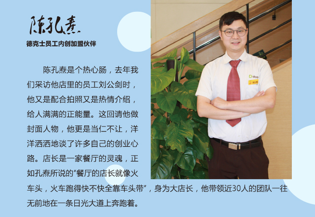
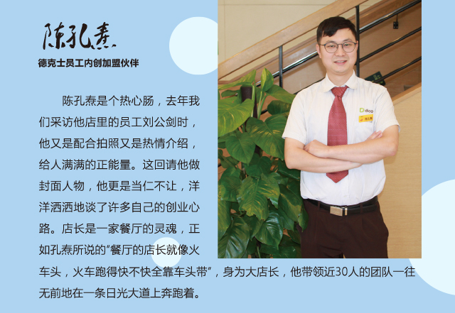

关于工作伙伴：将心比心
在我看来，员工在餐厅上班其实都是非常单纯的，多站在他们的角度沟通，了解他们需求，简单归纳就是四个字：将心比心。年轻的员工伙伴对学习新知识获取经验感兴趣，那我就多放权给他们做一些简单的餐厅管理工作，让他们有参与满足感。一些内场的大哥大姐们需要养家糊口，经济压力较大，我就多给班，保证他们的薪资有竞争力。这样自然而然，大家各司其职，管理起来、沟通起来就很顺畅了。
以前我在直营系统，那是一份职业，平时的接人待物都是从上而下执行，没有太多自己的想法。现在内创了，便拥有了自己一份小小的事业，董事长说，当老板者强，我也是在签下离职报告的那一刻起，才愈发体会这句话的深意。有许多创造性的想法，都会不打折扣地用心行动，更何况餐厅近30人的团队要发展，这本身就是一份沉甸甸的责任。在这责任面前，吾将上下而求索。
一家餐厅的氛围，员工伙伴们的工作状态全取决于餐厅的店长，例如在“卡友日，节假日”等需要挑战高日商时，怎样将餐厅伙伴工作状态调整最佳状态是餐厅店长业务水平的最基本体现。
关于家人：鼎力相助
‘
创业离不开家人的支持，内创前就已经和家人沟通，也得到家人的鼎力支持。我妻子在公司的后勤部门上班，平时替餐厅给公司送个资料或者替餐厅在公司领个东西，为餐厅“跑跑腿”。接店一个月后，我父亲也到餐厅帮我，每天帮忙打扫打扫宿舍，帮忙送外卖，维护外送车及餐厅水，是店里简单维修的“勤杂工”。我母亲在家照看9个月大的宝宝，平时和做饭大姐替换着给餐厅伙伴做员工餐，逢年过节做一些时令小吃，让伙伴们感受到家的温暖。
接店半年后，我把在老家上班的妹妹陈丹，妹夫关雨锋也叫过来帮忙，从德克士最基本的工作站学起，经过一年的历练，现在妹妹在梨园餐厅做人事经理，妹夫也在新开的万达餐厅负责值班管理。现在我们一家人团结在梨园餐厅的大家庭里共同努力，共同奋斗。
关于提升业绩：会员、外送和营业时间
首先必须得说的是董事长在巡回时所讲到的“11511”，我们梨园餐厅截至5月已办理2.2万张集享卡，会员刷卡业绩占到六成以上，会员刷卡TC占比也接近60%，当月的兑分比例近70%，人均购买5元。以上五项指标的达成是我们餐厅累计至4月成长近17%最有利的保证。
再来就是多关注留意外送平台的变化，及时调整策略，维护好外送平台的顾客关系。纵然外送面临着诸多挑战，但现在仍是我们提升业绩最有效的办法。
最后是深耕时段经营。发掘商圈的机会，并付诸行动。我们梨园餐厅周围都是大型社区，社区居住的人们大多数是在北京城里上班，晚上才回到梨园居住。晚餐的业绩明显要比午餐业绩好，餐厅打烊后还有顾客陆续进店询问点餐，所以我认为夜宵是有机会的，于是向公司申请将营业时间由晚上22点延长至凌晨1点，效果立竿见影，现在夜宵业绩每天稳定在3千元左右。
关于人生选择：常立志不如立长志
我从小比较调皮捣蛋，不太安分守己。读了半年中专就辍学，15岁那年还没拿到身份证就开始出来闯荡社会，换了很多份工作，走遍半个中国。18岁那年在深圳的公交车上看书读到了这样一句话：常立志，不如立长志。对我的触动很大。于是2008年只身一人来到北京，应聘上了康师傅私房牛肉面南礼士路餐厅的服务员，计划着一边工作，一边学习自考中国人民大学的新闻学。
没曾想到在这里结识了我的妻子，走上人生的正轨，脚踏实地从餐厅的服务员晋升到管理组、副店、店长，直到现在内创。工作大多数时候吧，日复一日的，往往就是一种习惯性。归根结底说就是为家人创造更好的生活。
其实一路走来的每个阶段都有每个时期的烦恼和困惑，我常常和自己说：不忘初心，生活不止眼前的苟且，还有诗和远方。最困惑的时候当属2015年更换跑道的时候，从康师傅私房牛肉面店长调至拓展贝客面包店，结果不到半年时间便以失败告终，又调整至德克士重新开始。更难过的是自考已连考两年也没有一科通过，停滞不前。对自己也有了怀疑，是为了学习而工作抑或是为了工作而学习？思想一度陷入死循环。最后也是在和家人商量后坚持学习，调整好心态蓄势待发。终于在2016年拿到了自考毕业证。
 
